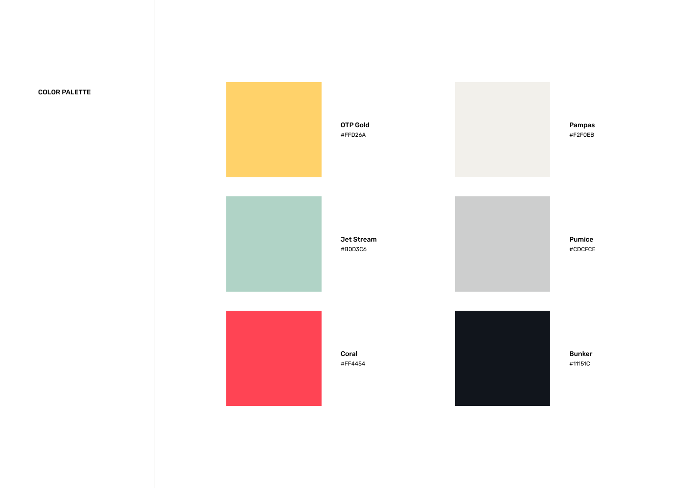
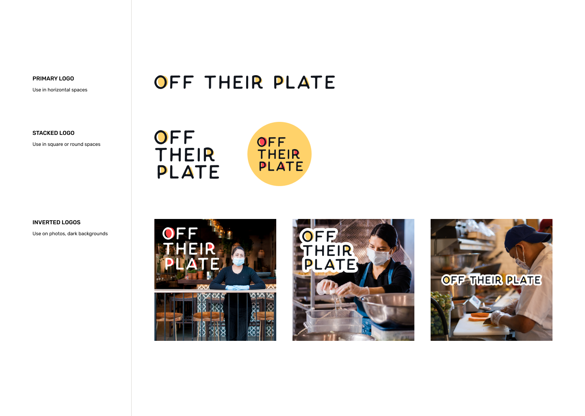
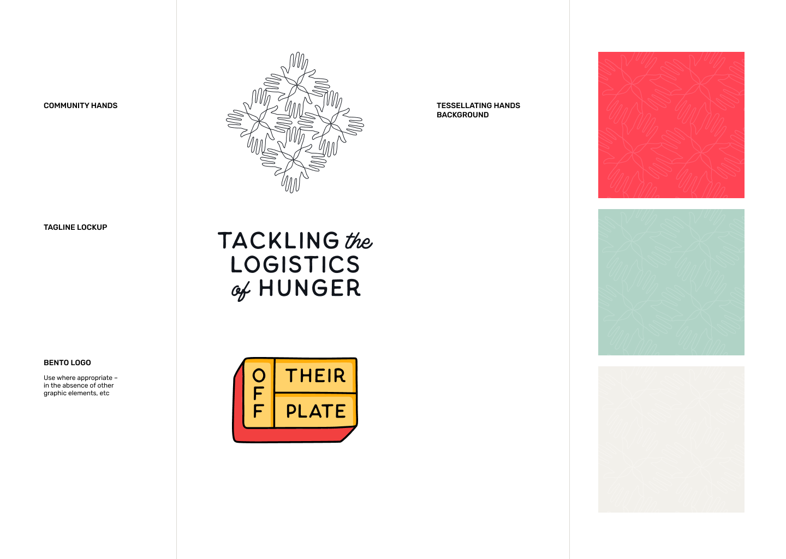
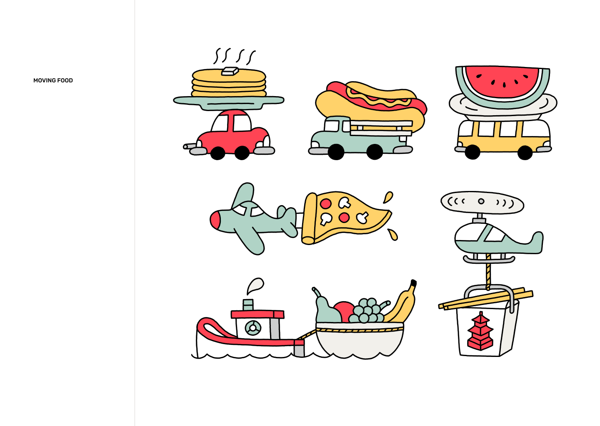

Tools: Figma, SquareSpace, CSS, Slack, Google Drive
Collaborators: Creative-Studio Team (Wilfred Tso, Neelie Kiebler, Liz Martindale, Emily Martin,
Danny Miller, Jaclyn Huang, Jocelyn Ueng, Julia Giammatteo, Michelle Huang)
Task: Alongside the rebranding/repurposing of OffTheirPlate to fit the post-COVID19 world, design
and create a fully redesigned website for the nonprofit organization to be a landing page for those
interested in learning more. Elements should include an overview of the company, the company’s mission
and core values, and a way to display all of the company’s partners and sponsorees.
Brand Book and Brand Development
As the creative team for OffTheirPlate (OTP), I, alongside Liz, Emily, and Danny, worked on building a brand
book for the new brand of OTP to fit the post-COVID19 repurposing of the organization to provide economic
aid to food industry with an emphasis on BIPOC and AAPI communities. First, we had a discussion about what
the aesthetic and vibe of the new company should be, and we decided to do something that is uplifting, a bit
child-like, and very happy. As such, we chose a very vbirant primary color scheme with a more neutral
secondary color scheme, as seen below.

Liz was able to create a beautifully simple logo concept using overlapping, playful circles with the “Off
Their Plate” text using the same yellow and red from the colors above to maintain cohesiveness. She also
included how it could be used alongside images or with our visual assets.

The typography itself is also quite playful and uses only sans serif fonts to give a more modern and playful
feel to the company’s brand. The header font, Thistails Sans, is incredibly playful and reminiscent of comic
sans while retaining some sense of professionalism, while the rest of the body text uses more standard fonts
for easy accessibility and readability. We decided to make accent font used for callout and highlighted text
pseudo-caligraphic to stand out from the rest of the sans-serif text, but we struggled finding a font that
was still easily legible. In the end, Thistails Regular worked out well because it struck the balance
between standing out and still being readable.

In flushing out the visual aspect of our brand, we built our background design, using white tesselating hands
on our brand colors to maintain cohesivity while also adding some visual stimulation. The tesselating hands
themselves are meant to symbolize community and how each of us, when put together, all come together to make
some beautiful. In addition we created a visualization to our tagline “tackling the logistics of hunger”
using our main font “Thistails”.

Our amazing illustrator, Danny was able to use the colors and conversation from our meeting to create this
playful and cute illustrations showing the blending of transportation and food, playing on how our food
industry and economy is essential.

Website
In collaboration with the writing, photography, and partnership investment teams, I was able to build the
organization’s website via SquareSpace. I heavily relied on the images sent in by the photography team and
the brand book the creative team made together as inspirations for the site’s layout, and focused mainly on
highlighting images and using a small amount of words to highlight what was most important. All of the
site’s calls to actions were made yellow to stand out and the I decided it was best to use the green and
cream the main background colors because they were more cool and neutral, so that the black text and yellow
calls to action could pop more. You can view the site here.
Second Helping's Website
I was also tasked with creating the blog/resource secondary site for OTP called “Second Helping.” I wasn’t
given many guidelines by Neelie, the manager of the creative team, other than “match the branding of the
main OTP site” and “showcase our articles blog style”, and so I worked off of the formatting of the site.
The only thing I changed in terms of branding was using the dark navy blue based off of the branding of
Second Helping, but the navigation was meant to feel similar to the OTP site. However, I designed this site
keeping in mind that the main demographic is no longer the general public, but instead chefs and restaurant
owners that are interested in the research and resources OTP freely provides to aid the restaurant industry.
Since the main function was to show our published articles, resources, and research, I categorized the work
into 2 sections, industry reports and resources. Both of these are presented as clickable windows that will
lead to previewable pdfs that can be downloaded. I formatted them to be in a horizontal display gallery,
that can be scrolled through, where each window displays the main information within each article (i.e.
“Disparities Amongst BIPOC-Owned Restaurants in America”).
While this site is still in construction, you can view sections of my wireframe below or visit this figma
file link.